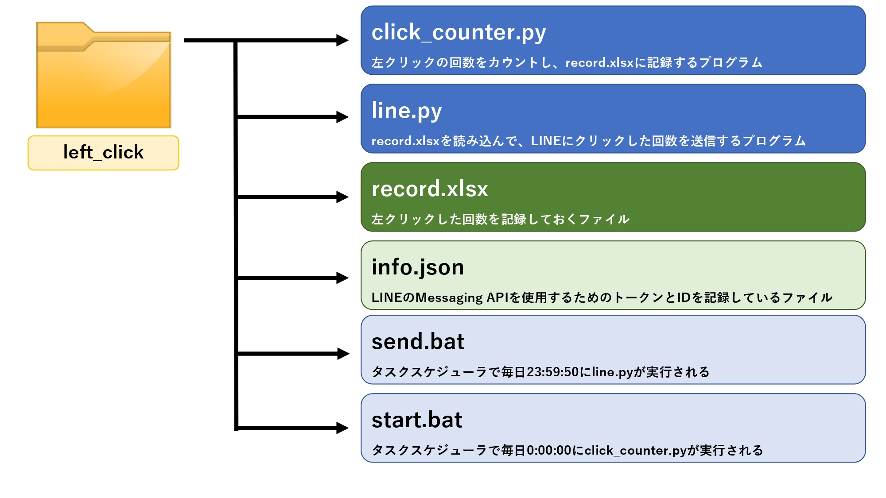
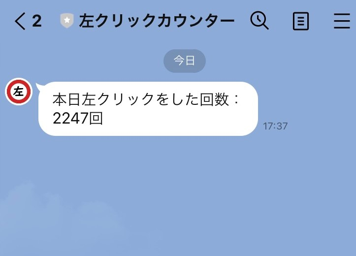

【Python】左クリックカウンター
はじめに
本格的にプログラムを勉強し始めてから半年ほど経ちました。
少しずつ自分の思った通りのプログラムを作れるようになってきて、上達の実感を感じてきています。
ある日僕は思いました。
"一日に何回左クリックしているのだろうか?"
大学も春休み入ったため、暇つぶし程度に左クリックをカウントするプログラムを作ることにしました。
さらにLINEのAPIを使って、毎日決まった時間に左クリックした回数を自動で送信する機能も実装しようと思います。
要件定義
今回は0:00:00から23:59:40までに左クリックした回数をカウントし、23:59:50にLINEでその回数を 送信するというプログラムを作成します。実装する具体的な機能は次のようなものになります。
クリック回数のカウント、LINEでの送信などすべての処理を完全自動で行うようにする。
「左クリックカウンター」というLINEアカウントで回数の送信を行う。
なお今回は複数のスクリプトファイルを作成して1つのシステムを構築しています。 システムを構成するファイルの名前と役割はこのようになっています。
プログラムの仕組み(click_counter.py)
まず初めに0:00:00にタスクスケジューラによってstart.batが実行され、click_counter.pyが起動します。
click_counter.pyでは左クリックを検知し、その回数をrecord.xlsxに記録する機能があります。
左クリックの検知方法にはWindows APIの「GetAsyncKeyState」を使用しました。
これをそのままif文に組み込むと、クロック周波数に合わせて回数が記録されてしまうため、
一瞬しかクリックして内のにも関わらず数百回もカウントされてしまいます。
これを防ぐためにマウスの左ボタンを押してから離すまでで1カウントとなるように設計しました。
またこのプログラムは23:59:40に自動で停止するようになっています。
プログラムを停止しなければ、line.pyがrecord.xlsxにアクセスできなくなってしまうためです。
一連の処理が完了したらstart.batによって再び実行されます。
プログラムの仕組み(line.py)
このプログラムを作成する前にLINE DevelopersにログインしてMessaging APIを使うための
botの設定を行いました。その後、発行されたアクセストークンとユーザIDをinfo.jsonに書きました。
プログラムの方では、まずinfo.jsonとrecord.xlsxをロードします。info.jsonからはアクセストークンとユーザIDを取り出します。
この2つはMessaging APIを利用するために必要になります。record.xlsxからはクリックした回数を取り出します。
この2つの情報を使ってクリックした回数をLINEで送信します。プログラムはタスクスケジューラで23:59:50に自動で実行されるように設定しています。
実行結果

このシステムを稼働させている間は、毎日23:59に上の画像のようなメッセージが届きます。
※上の写真は実験用でスクショしたものなので17:37になっています。
1週間ほど稼働させましたが、放置していても毎日メッセージがちゃんと送信されてきているため、
正常に動作していると思います。
まとめ
プログラムを作りしばらく稼働させました。その結果、僕は一日に約3000回左クリックをしていることが分かりました。
意外と多くて驚きました。またプログラムを作る中でAPIを初めて使用し、その理解を深めることができました。
今回はLINEのAPIを使用しましたが、実はTwitterのAPIを使って毎日決まった時間にクリックした回数をツイートするというアイデアもありました。
しかしTwitterのAPIを取得するのに時間がかかっているため、後で実装できたらと思います。